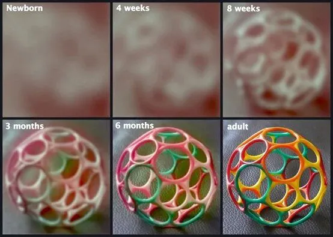

孖仔帮
公众号ID：twinsbang
关注
文|圆圈妈妈
网图|侵删
#先插播一则群通知#：第20期双胞胎跳蚤市场群已开放，公众号输入“赶集20”，扫码即可入群。

双胞胎之间什么时候开始有互动？
在回答这个问题之前，我们先来看一张图：
婴儿的视力发展过程图▲
新生儿的视觉神经尚未发育完全，所看到的世界都是黑白且模糊的，视力经过不断发育才能看清楚，看见颜色和双眼聚焦。
从图中可以看到，刚出生的宝宝，其眼珠子是无法一起固定看一个物体的，到了6个月大时才能固视地看清东西，然后逐渐成人化。
基于此，回到我们的疑问，双胞胎之间什么时候开始有互动？
大约在6个月，双胞胎才会看到彼此的存在，才可能会有真正意义上的互动。
但只是可能，因为还有其他因素的影响，如孩子的气质，养育的环境，照料者的陪伴等。
举个例子：圆圈兄弟
他们俩具体啥时候开始有真正意义上的互动，我还真想不起来了，我只记得，两人在一起时那些画面，很暖，很好玩，很有爱。
2-3个月大时，把两小只放在一起，两人会对视，但有时候一人看着另一人，另一人会无动于衷；抓对方的手，饿的时候，还会舔上几口；拉对方的耳朵，扯衣服，抓头发和眼睛...
5-6个月大，他们俩会看着对方，嘴里发出咿咿呀呀~da~da的声音，不知道在说什么，我反正听不懂，但是两人好像聊得很嗨，偶尔还会切换下表情，突然咧开嘴，手舞足蹈，笑呵呵地看着对方...
然而，这只是两人同时心情好的时候。
大多数情况下，两人只是偶尔瞟一眼对方，就各自转头看向别处，没有下文了，有时一个宝会对另一个宝贼溜溜地笑，但另一个宝却一脸漠视，全程高冷，不回应，不理睬....
到了9-10个月大，有了真正意义上的互动，他们终于发现对方是存在的，会往对方身上扔玩具，试探下，用力掐对方的脸，看会有什么反应；还会互相模仿对方，不高兴的时候还会抡起小拳头敲对方的脑门。
吃饱喝足，颇有雅兴之时，他们两人就好像连体似的，脸贴脸，鼻子碰鼻子，头顶头，往对方身上蹭啊蹭，蹦啊蹦，挠啊挠...一起哈哈大笑，笑得很魔性，让人忍俊不禁。
我总是在下班回家后，晚饭都顾不上吃，就把两人放在爬爬垫上，跟他们互动，看他们互动，这让劳累一整天的我，很满足，很放松。
很庆幸，一口气生了2只。
左边圈圈，右边圆圆，约5个半月！
世界上最幸福的事莫过于...
有人陪你，一起沙雕，一起二哈▲
所以，在看的各位爸爸妈妈们，不管多累多忙，都请停下来，好好欣赏下，软糯糯的两小只刚开始互动时，在对方身上互相探索的画面吧。
不管是有意识和无意识，这些和谐的互动，都超有爱，非常暖，很治愈，满足感和幸福感油然而生。
当然，如果你们家的双胞胎，到了6个月大，还没有互动，没有交集，彼此无感，好像不认识对方，互相不搭理，各玩各的...
也不必太着急哈！这是因人而异的。
每个孩子气质不一样，成长自有节奏，还需要父母多一些耐心的等待和细心的捕捉，以及多创造双胞胎在一起的机会，也许双胞胎之间的互动就在那个某一天，不经意间地来了。
这里汇总了些双胞胎之间那些互动的日常表现，大家可以参考下哈。
以下信息来源于我们的孖仔帮双胞胎社群的分享。
会对视，互相抓手，抢球
摸摸对方的脸
吃对方的手指或脚趾
舔对方的耳朵
抓对方的头发
一起玩口水，吐泡泡，超对方嘟嘟嘴，发出奇怪的声音
第一次看到超大号的泰迪熊，两人抱在一起大哭，然后四处逃窜
把对方的屁股当球拍，把对方的口水当奶喝
在对方的身上蹦跶，看起来被虐的那个，还很享受的样子
被对方打喷嚏的样子和声音逗乐，然后一起重复打喷嚏的动作，还时不时放声大笑
抢对方的奶嘴，自己的却不吃，看着对方哭就乐呵呵地笑
互相给对方的嘴里塞奶嘴，故意让对方咬不到
猛地一把推倒对方，看着对方倒下就咯咯地笑，跌倒的那个也不哭，笑得更豪放
两人爬到桌椅下玩躲猫猫，碰到一起时，尖叫，笑成一团
餐椅放一起，一边喝，一边笑眯眯地看着对方，有时还会互相喂食
虽然双胞胎互动起来很好玩，但有一个真相，不得不告诉你，随着年龄的增长，有些互动会让人又爱又恨。
比如，抠对方的眼珠子，抓伤对方的脸，踢肚子，踹屁股，互咬对方，抢玩具，抢书，甚至打架....
这就需要看护人在边上多费点神儿，两小只对周围的环境还在探索中，很多行为都是无意识的，随机的，也不懂的对与错，妥协，退让...
此时的双胞胎就像个原始人，一片空白，但又无比野蛮。
这也是为什么有些父母会苦恼，双胞胎开始爬行学走路时，反而会经历一段更加难带的适应期。
我的建议时，互动得有，感觉有危险时，适时分开即可。
注意，只是暂时把两人抱走分开，不必打骂说教，待两人情绪稳定下来后，还是让他们玩在一起；更不必一朝怕蛇咬十年怕井绳，从此让两人楚河汉界互不相干。
不管怎样，都应鼓励双胞胎多一点互动，哪怕是偶尔的干架也好，一起搞怪，一起逗比，一起捣蛋...也罢！
那些有爱，有趣，好玩，暖人的互动画面，真的会让你温暖一个上午，感动一个下午，兴奋一个晚上，还能让你日后想起来回味无穷，养娃育儿的烦恼和焦虑一扫而空。
更重要的是，两个孩子有互动，有伴儿一起玩，后面带起来会轻松很多，会大范围，全方位，多方面地解放双手，会感觉越来越香，越来越飘！
不信？试试看呗！
今日互动话题
#双胞胎什么时候开始有互动？#
评论区聊一聊呗！
微信公众号：孖仔帮
ID : twinsbang
专注双胞胎孕育，养育，教育经验分享
扫码关注我们
点一下你会更好看耶
